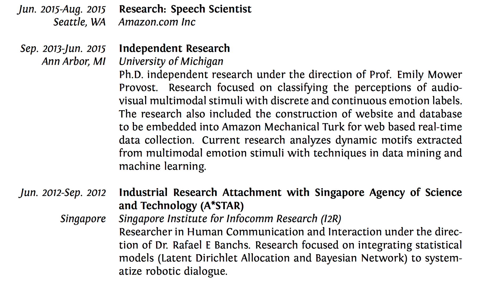
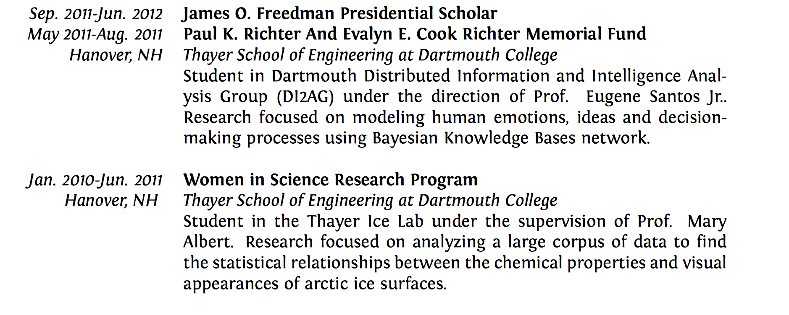
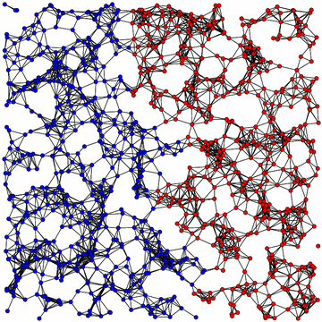
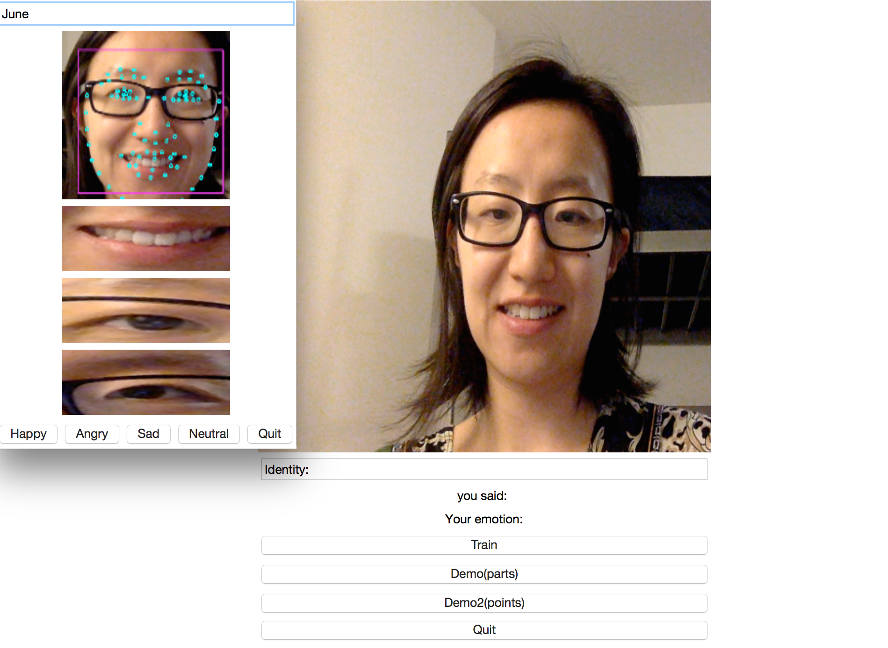
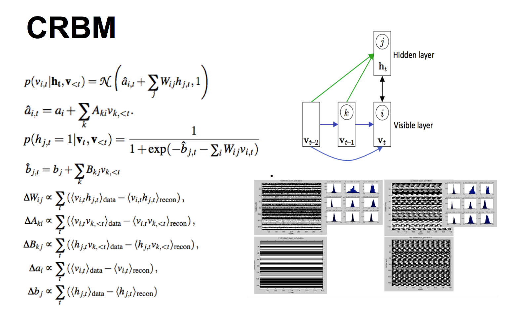
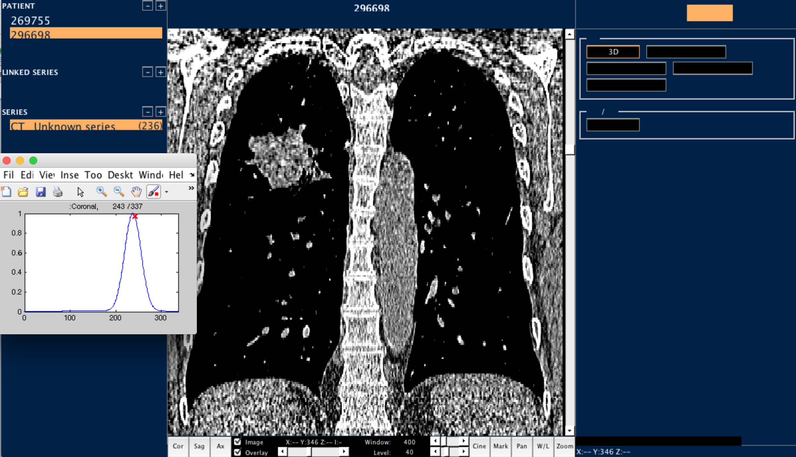
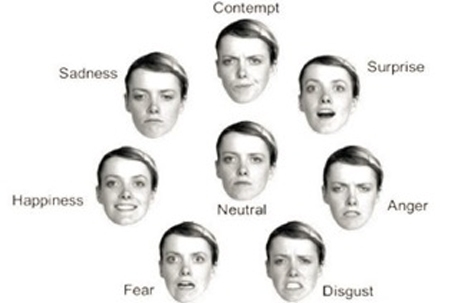

Android Listening
Under constrution
Android Responding
Under constrution






This is currently under construction
This is currently under construction

(image source: http://www.research-live.com/Pictures/web/e/i/g/faces.jpg)
Facial Feature Extraction
Audio Feature Extraction
Feature Selection
Amazon Mechanical Turk Real Time Evaluation
Emotion classification
Classification in Valence-Activation scale
Classification in Basic Emotion Space
The temporal dynamics of Emotion
This is currently under construction
Balancing data for deep learning
Generating Art using deep learning
This is currently under construction
Under constrution
Under constrution